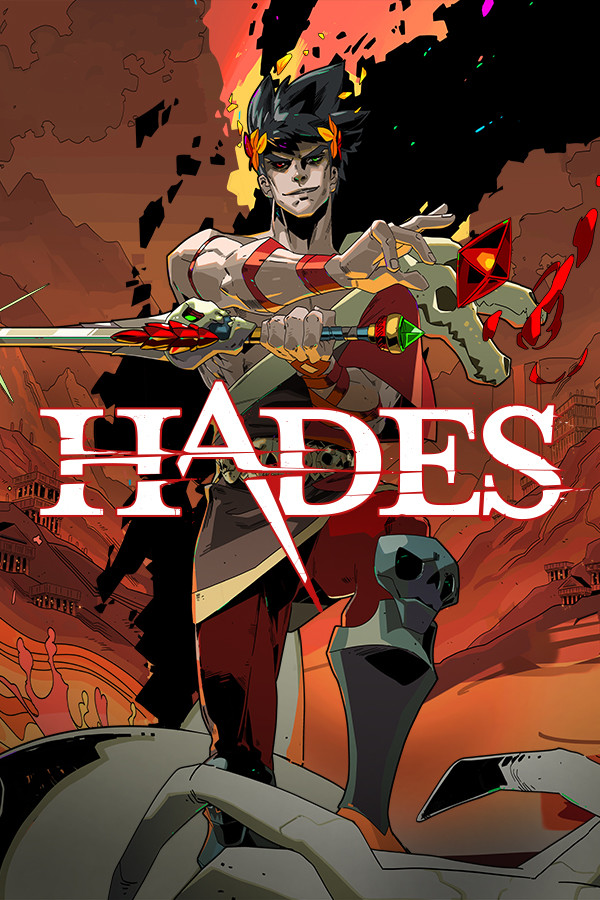
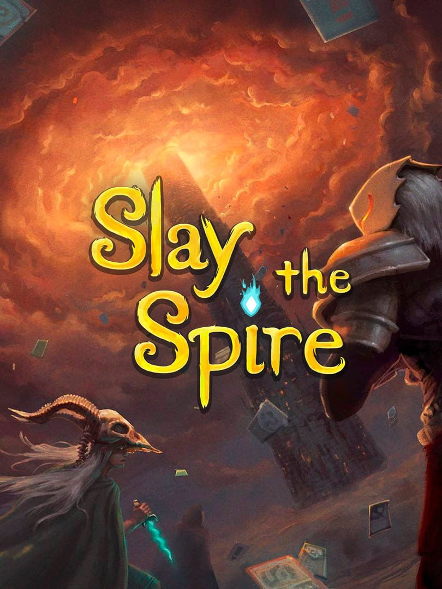
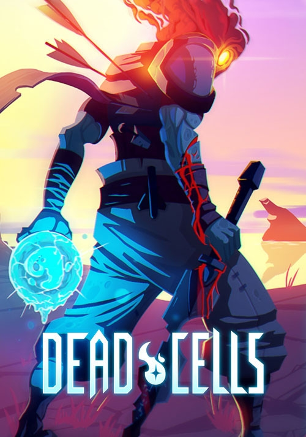

Introduction
People have always played games throughout history. From the classics like chess and card games to the more modern board games and video games, people have always loved putting their skills to the test. And with the invention of video games, came a new boom for gaming as it opened the door for endless possibilities. With the limitations of the physical world removed, more and more people flocked to cyberspace. Today gaming has become one of the most common hobbies among the new generation, and over the years people have carved out subcommunities or genres within the gaming world based on the style of games they enjoy. These genres range from first-person shooters, to single-player story games, to MMO RPGs, and tons more. There is one specific genre of games, however, that I really enjoy playing: roguelikes.
Hades
Hades is a roguelike action dungeon crawler video game developed and published by Supergiant Games. In Hades, you play as Zagreus, the son of Hades, as you attempt to escape from the Underworld to reach Mount Olympus. Each run challenges you through a random series of rooms populated with enemies and rewards. The game has a hack and slash combat system, and you use a combination of main weapon attacks, special attacks, a dash ability, and a magic ability to defeat enemies while trying to take as little damage as you can to progress as far as possible. One of the key elements of the game is that you will die - repeatedly - and after each run you will gain treasures that will allow you to improve certain attributes or unlock new weapons and abilities to improve your chances of escaping on your next run.
There is a lot I love about this game. For starters, the art for the game is jaw dropping beautiful. No matter how many times I play this game, I always stop to appricient just how astonishing it looks. And to complement the beautiful art, the game also has an outstanding sound track that never gets boring to listen to and really does a good job of capturing each moment. However, my favorite thing about Hades - and about all three games - is the replayability of the game. Each run is unique in its own way and brings something new to the gaming experience so I never feel like I'm doing the same thing over and over again.
Slay The Spire
Slay the Spire is a roguelike deck-building video game developed by American studio MegaCrit and published by Humble Bundle. In Slay the Spire, you can play as one of four characters and attempt to ascend a spire of multiple floors, created trhough procedural generation, or random generation, battling through enemies and bosses. Combat takes place through a collectible card game-based system, where you gain new cards as rewards from combat and other means, requiring you to use strategies of deck-building games to construct an effective deck to complete the climb. Slay the Spire has been well-received. It was nominated for several accolades in 2019, and is considered the game that launched a number of roguelike deck-building games.
Slay the Spire is near and dear to me because I've been playing this game for over 7 years now and it is the first roguelike I ever played: it is essentially what got me hooked onto the roguelike genre. What I especially love about this game is the combination between roguelikes and cardgames, because I've also been a long time fan of card games as well. I've probably been the game at least 100 times but I never get tired of it. I love just kicking back after a long day, pulling up Slay the Spire on my ipad, and just climbing the spire.
Dead Cells
